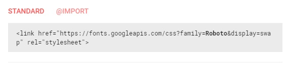

Заходим на сайт fonts.google.com и в поиске вводим название необходимого шрифта. После тогокак нашли нужный шрифт, нажимаем кнопку добавить шрифт:
После этого внизу страницы отобразится окно с выбранными шрифтами (Family Selected)
В этом окне проходим на вкладку "Customize" и в разделе Languages мы можем поставить галочку "Cirillic" (т.е. этот шрифт будет поддерживать кириллицу)
В верхнем разделе окна можно выбрать тип шрифта (bold, italic и т.д.). Тип используемого шрифта можно посмотреть в фотошопе:
Таким образом мы можем выбирать несколько шрифтов
После того как мы быврали все необходимые шрифты, в окне "Family Selected" мы нажимаем на вкладку "EMBED" и в разделе "STANDARD" копируем ссылку на наши шрифты:
Эту ссылку мы копируем в раздел haed html документа
Теперь как нам обращаться к нашим шрифтам? В том же окне "Family Selected" на вкладке "EMBED в разделе "Specify in CSS" мы копируем строки обращения к шрифтам для CSS
Может случиться так, что в Google Fonts необходимого шрифта не окажется. Тогда придется подключать шрифты локально
Обычно файл с шрифтами имеет расширение ttf. Для того что бы необходимый формат корректно отображался в разных браузерах, нам необходимо сгенерировать наш шрифт в форматах:
Качаем файл ttf с нужным шрифтом и идем на сайт TRANSFONTER.ORG
На сайте жмем кнопку Add fonts - указываем путь до нашего ttf файла, далее в разделе Formats выбираем все необходимые форматы шрифта и жмем кнопку Convert (если transfonter.org не работает , то в google ищем любой другой frontface генератор)
После того как нажали кнопку Convert, на выходе у нас скачается архив, в котором будут файлы нашего шрифта с необходими форматами, а так же файл CSS.
Файл CSS будет содержать подобного рода код:
О чем тут написано? Здесь говорится что добавлен новый шрифт, к которому можно обращаться как - League Spartan Bold. в конце указано что жирность текста (font-weight) - bold (жирный, можно кстати указать самому значение от 100 до 900). font-style: normal; - это нормальная высота шрифта - 14 пикселей.
В середине указаны пути к файлам со шрифтами. Здесь надо быть внимательнее. Вот этот код нам необходимо добавить в самый верх нашего CSS файла и соответственно пути к файлам должны быть указаны относительно файла style.css. Лучше всего в папке CSS создать папку fonts и в нее помещать папку названную именем шрифта, в которой и будут храниться файлы со щрифтами.
Теперь что бы указать шрифт для текста в css пишем:
font-family: 'League Spartan Bold', sans-serif
sans-serif - означает что в случае если шрифт не будет доступен, то будет использоваться шрифт по умолчания без засечек